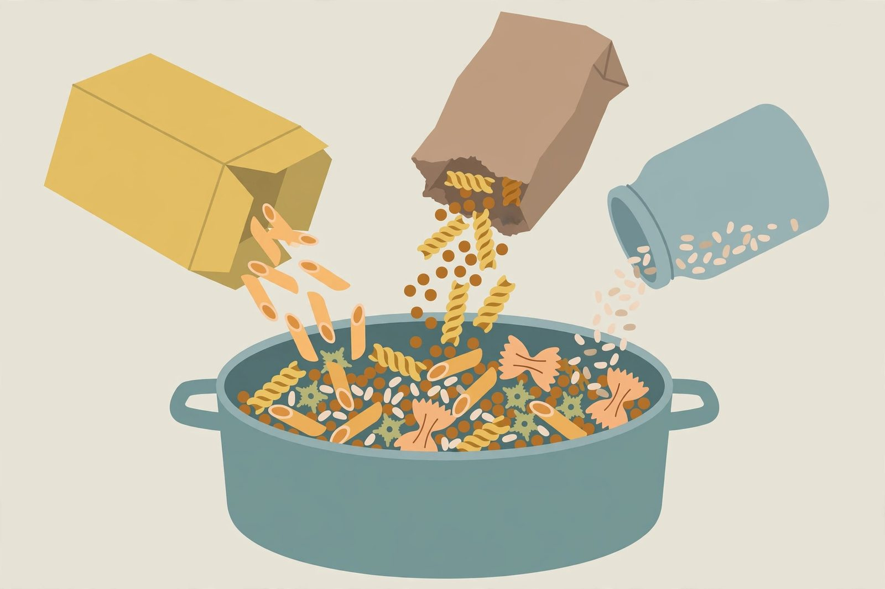

Turn odds and ends into dinner

Every cupboard develops a population of partials: half a box of penne, a third of a bag of rice, one can of chickpeas, the dregs of the oats jar, three different half bags of pasta nobody wants to open. These odds and ends feel useless individually, but combined they're a dinner waiting for a little planning.
The rule of combination
The trick is that most partials belong to a family, and families combine. Half a box of penne plus half a box of fusilli is just pasta — different shapes cook at slightly different rates, so start the thicker one a minute or two earlier and you'll never notice. A third of a cup of rice plus a third of a cup of a different rice is still rice. Small amounts of different canned beans go into the same chili. The instinct to keep things separate is aesthetic; the pot doesn't care.
The clear-out meal
Once a week or so, cook a meal whose entire purpose is finishing things. The best formats for this are soups, skillets, and bakes, because they accept almost anything. A pot of soup absorbs a half bag of pasta, a lone can of beans, and the last of the rice without complaint — just add each at a point in the cooking time that suits it. A skillet hash takes the tail end of potatoes, canned meat, and whatever frozen vegetables remain. A pasta bake swallows two partial boxes of pasta under a blanket of canned tomatoes and breadcrumbs made from stale bread.
Small cans, big jobs
Single small cans — tomato paste, chipotles, anchovies, water chestnuts — are seasoning for a whole dish, not a dish themselves. A tablespoon of tomato paste fried in oil gives a whole pot of beans depth. A small can of green chiles transforms plain rice and beans. When you have one odd can and no plan, ask "what flavor does this bring?" and add it to a plain base of rice, pasta, or potatoes. Salt, acid, and heat are the flavors that rescue blandness, and small cans are often concentrated versions of exactly those.
The tail ends of dry goods
Nearly empty bags of flour become a roux or a pancake batch. The last of the oats thickens a soup or stretches meatballs. Stale crackers and cereal, crushed, become toppings for bakes or breading. These tail ends are also perfect for the meal-stretching tricks: oats and breadcrumbs bulk out ground meat, and extra starch pads any soup to serve one more person.
Inventory before shopping
Odds and ends accumulate because we shop without looking. A five-minute cupboard scan before writing the grocery list prevents most of it: you'll buy the one thing that turns three partials into a meal instead of the fifth partial. And when you're planning the week, put a "use-it-up" dinner on the calendar — soup, skillet, or pasta bake — so the partials have a scheduled exit instead of waiting indefinitely.
When to let go
Not every partial is worth saving. Opened dry goods past their prime (stale, musty, or rancid-smelling oils and flours) should go — rancid fat can't be cooked back to good. Cans with dents on the seams, bulging lids, or rust should be thrown out without tasting. Using things up is about being resourceful, not about eating anything questionable — one habit that helps is a short "use first" corner of the fridge where partials live, so they're seen instead of forgotten. Check that spot before the pantry when you plan dinner; a simple routine that cuts waste week after week, and makes dinner more creative, not less. When in doubt, throw it out: one wasted partial costs less than a sick household.